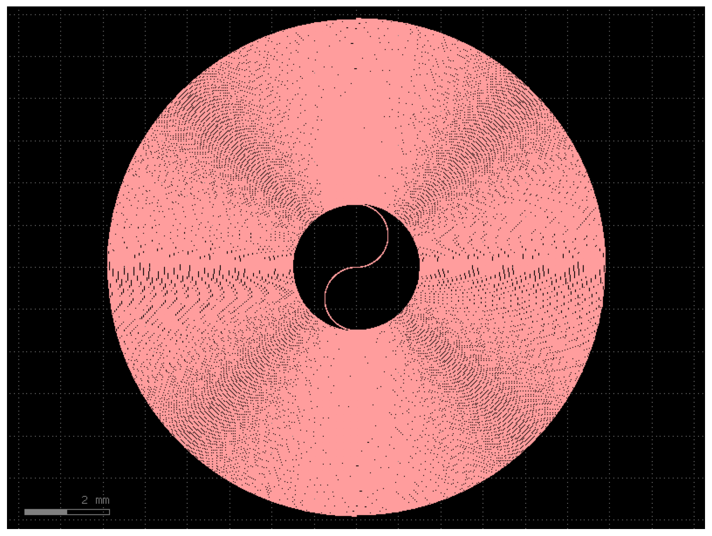

Design summary
| Platform | 2%-Δ Ge-doped SiO₂ buried channel (PLC) |
| Target group delay | 20 ns @ 1550 nm |
| Waveguide group index n_g | 1.47 (TE00 @1550 nm) |
| Physical length L = c·τ/n_g | 4.079 m |
| Realised path length | 4.096 m |
| Realised delay | 20.08 ns |
| Core width | 6.0 µm |
| Minimum bend radius | 1500 µm |
| Turn pitch (separation) | 25 µm |
| Loops | 88 |
| Die footprint | 11.78 × 11.81 mm |
| Topology | Double (in-and-out) Archimedean spiral |
Layout preview

Downloads
⬇ GDS file (493 KB) ⬇ Python source (2 KB)
GDS는 GDSFactory generic PDK의 WG 레이어(1/0)에 그려져 있습니다. KLayout으로 바로 열거나, 실제 공정 PDK 레이어로 remap해서 사용하세요.
GDSFactory source code
"""
Silica 2% Delta 20 ns Spiral Delay Line - GDSFactory generator
=============================================================
Platform : Ge-doped SiO2 core (2% index contrast) buried channel, PLC
Target : 20 ns optical group delay @ 1550 nm
Group delay -> physical length
L = c * tau / n_g = (2.99792458e8 * 20e-9) / 1.47 = 4.079 m
n_g = 1.47 : TE00 waveguide group index of a ~6 x 6 um 2%-Delta silica
core at 1550 nm. Low-contrast silica requires large bend
radii (>= 1.5 mm) to avoid radiation loss, so the 4.08 m
path folds into a ~11.8 x 11.8 mm die.
Continuous in-and-out double (Archimedean) spiral: input and output on
the same edge, no crossing. Loop count solved so the realised length
lands on the 20 ns target.
"""
import gdsfactory as gf
gf.gpdk.PDK.activate()
# --- physical target ---------------------------------------------------
C_LIGHT = 2.99792458e8 # m/s
TAU = 20e-9 # s (20 ns)
N_GROUP = 1.47 # silica 2%-Delta TE00 waveguide group index @1550 nm
L_TARGET_M = C_LIGHT * TAU / N_GROUP
L_TARGET_UM = L_TARGET_M * 1e6
# --- geometry ----------------------------------------------------------
WG_WIDTH = 6.0 # um core width (2% Delta, ~6x6 um single mode)
MIN_RADIUS = 1500.0 # um minimum bend radius (low-loss for 2% silica)
SEPARATION = 25.0 # um pitch between adjacent turns
N_LOOPS = 88 # solved so realised length ~= 20 ns target
xs = gf.cross_section.strip(width=WG_WIDTH, radius=MIN_RADIUS)
c = gf.components.spiral_double(
min_bend_radius=MIN_RADIUS,
separation=SEPARATION,
number_of_loops=N_LOOPS,
npoints=8000,
cross_section=xs,
)
# --- report ------------------------------------------------------------
L_real_um = c.info["length"]
bb = c.bbox()
w, h = bb.right - bb.left, bb.top - bb.bottom
print(f"Target delay : {TAU*1e9:.1f} ns (n_g = {N_GROUP})")
print(f"Target length : {L_TARGET_M*1e3:.1f} mm")
print(f"Realised length : {L_real_um/1e6:.4f} m "
f"(delay = {L_real_um*1e-6*N_GROUP/C_LIGHT*1e9:.2f} ns)")
print(f"Die footprint : {w/1000:.2f} x {h/1000:.2f} mm")
c.write_gds("silica_2pct_20ns_delay.gds")
print("Written: silica_2pct_20ns_delay.gds")